A tool for measuring inductors. Inductors are important especially in circuits involving higher currents, but they can be hard to measure.
\[ V = L \frac{dI}{dt} \]Or, in English, the voltage across the inductor is equal to it's inductance times the change in current through the inductor. This circuit will apply a constant voltage step, and allow us to measure \(dI/dt\) so we can find \(L\).
"KiCad" is a collection of several programs, each with their own role in the PCB design process.
KiCad is designed around working on one project at a time, each PCB project is kept in it's own directory.
What is "schematic capture"? It's all about drawing the schematic (aka circuit diagram), which produces the netlist and BOM. The netlist is required for PCB layout, or can be used for running simulations in SPICE. More below.
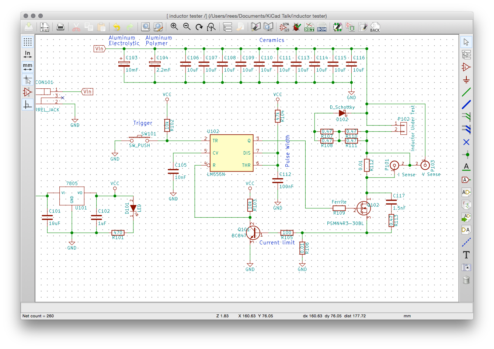UI involves using keyboard + mouse, you'll want to learn some of the keyboard shortcuts.
Wires can be connected to other wires (filled green circles) or unconnected pins (square/circle outlines).
General workflow is to move cursor to start of wire, press 'w' key, draw wire, pressing 'w' to add corners, then click a node or press 'k' to end the wire.
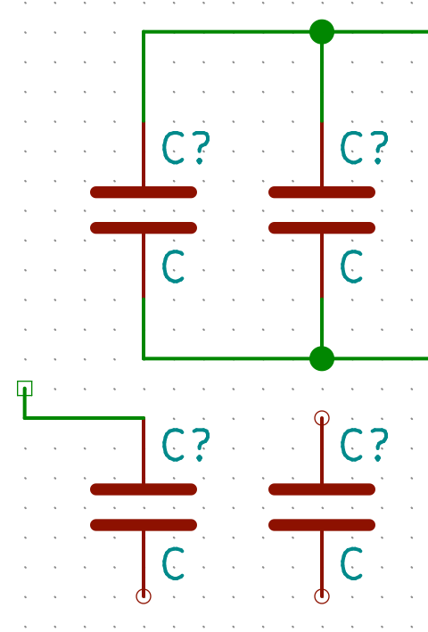Where are pins 1 and 8? Some parts have pins that are hidden by default - see the "Show hidden pins" button on the left. Make sure a net has name "VCC" to provide power to these.
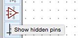Once the diagram has all required parts, "Annotate" it to change reference designators from C? to C123.
Next, we need to associate the parts on the schematic with footprints for the PCB Layout tool. Run the CvPcb tool with the button at the top:
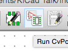CvPcb shows three panes - the left pane is a list of parts libraries, the middle is the parts in your schematic, and the right is a list of parts that have passed through the current set of filters. Filters are enabled/disabled using the buttons at the top. Associate parts by highlighting your part in the middle, then double clicking the footprint on the right.
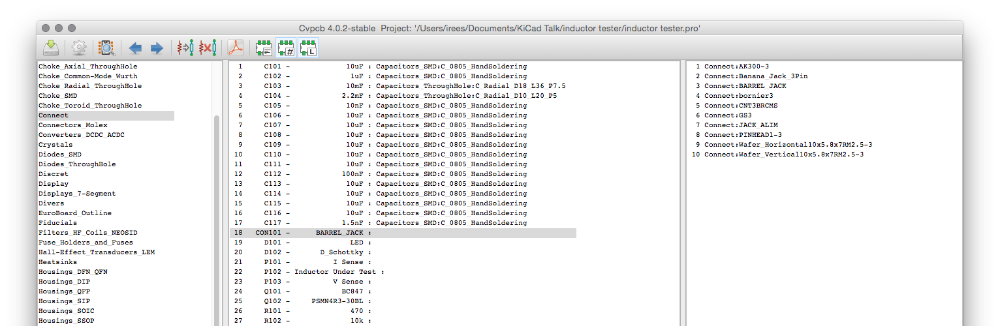Once all the parts on your board are associated with footprints, click the "save" button and go back to Eeschema to export the netlist. Default settings should be fine for Pcbnew.
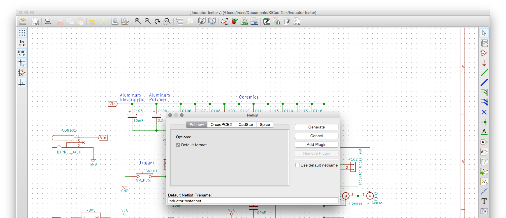Pcbnew is the program where we do the actual circuit board layout. It takes a netlist from Eeschema and footprint information from the library, and helps you lay out a PCB.
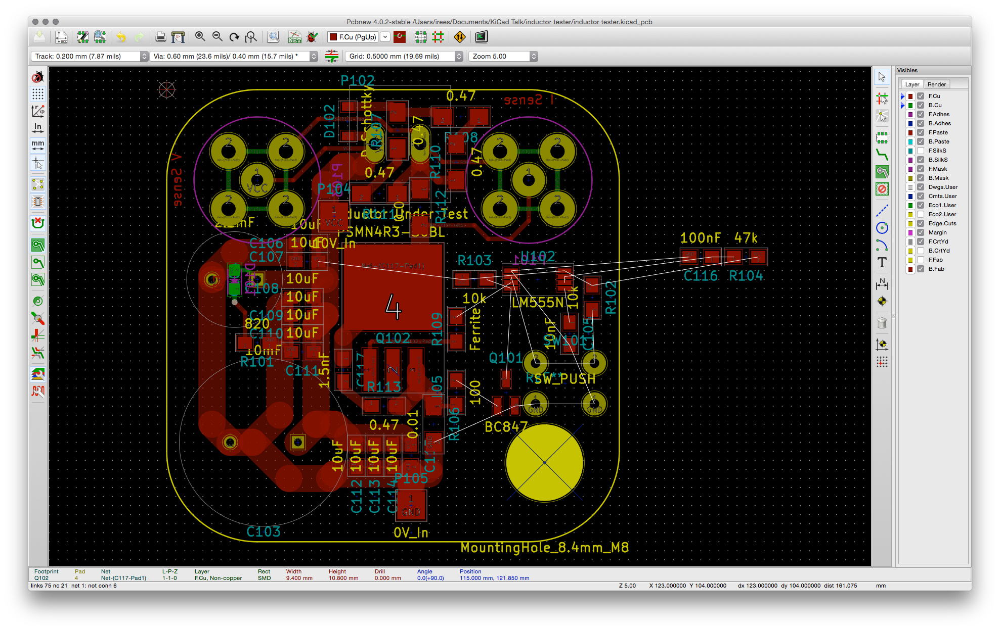PCBs dimensions are often discussed in mils, which is prounounced "terrible unit". A mil is \(\frac{1 inch}{1000}\), not a millimeter.
Things get especially fun with SMT package sizing eg 0603 Metric is equivalent to 0201 Imperial, about a third the size of the more common 0603 Imperial.
You'll find some parts fit nicely on mm grids, and some fit nicely on inch grids. So, don't get too caught up on one system or another - it's very easy to switch the grid as desired.
The first step using Pcbnew in a new project is importing the netlist from your earlier work in Eeschema. Click the "Read netlist" button to bring in your earlier work - it should be selected by default. You might get a few errors like these - we'll deal with them later:
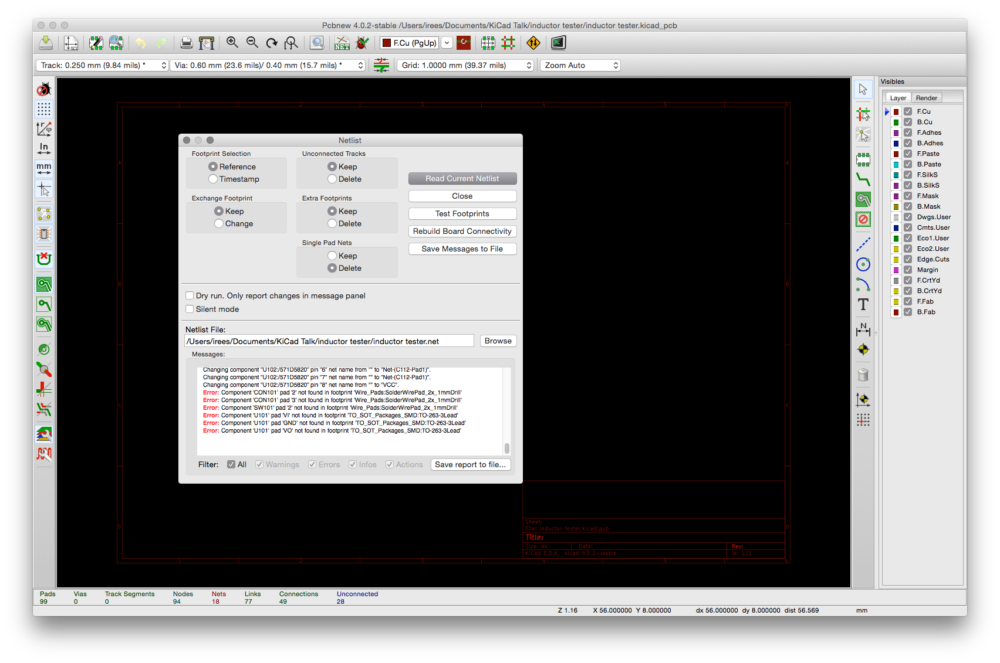Once your netlist is imported, all the parts will be stacked on top of each other - not very helpful. Make sure you're in "Footprint mode" 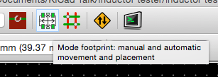, then right click in the black area and select "Global Spread and Place", then "Spread out All Footprints".
In my experience, PCB layout is an iterative process. This time, we know the maximum dimensions based on the PCB supplier - it's cheaper if we can stay inside 5x5 cm - so let's start making a board outline. Pick the Edge.Cuts layer on the right hand side, then select the "Add Graphic Line or Polygon".
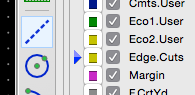While getting the outline right, you might find it helpful to right-click on sections of the "drawing" (the outline) with the drawing tool selected. For example, the arc tool will create 90° arcs by default, but those can be changed through the "Edit Drawing" context menu.
Unfortunately, there's an error in the netlist generated - the gate pin on this FET should be pin 1, but we've got it connected to pin 2... How to fix
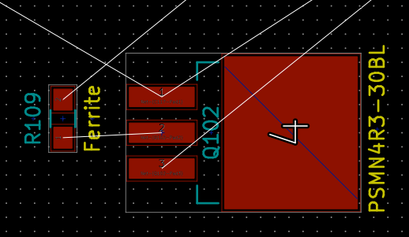Some of the track in this project will need to carry relatively high current, so we'll want to draw those a bit wider than default. Pcbnew uses a concept of "Net Classes" to set default widths, clearances, via sizes, etc. for nets. Net Classes are setup in Design Rules > Design Rules Editor.
For a simple board, make sure the clearance for the default net list looks reasonable, then go to the Global Design Rules tab and add some extra track width and via diameters.
The "add tracks and vias" tool lets you lay down wires. When you're drawing, the 'w' key changes width, and the 'v' key adds a via.
Although KiCad has a large libary of components available, we'll likely need to make some additions or changes. In doing this, it's important to understand the distinction between a Symbol and Footprint (formerly known as module).
I've found three approaches to footprint issues in KiCad:
PCB fab houses generally take "Gerbers" for everything except the "drill file", which uses Excellon format. Generate Gerbers from Pcbnew's file > Plot dialog.
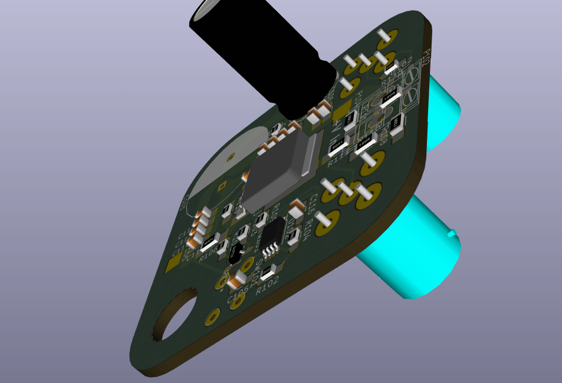I've had good experiences ordering boards from Dirty PCBs and would recommend them, especially for hobby usage. They requires gerber files to be submitted in a particular format; see their about page for details. In Pcbnew's Plot dialog, tick the "Use Protel filename extensions" box to get 90% of the right format, AFAIK only the Edge.Cuts will need to be renamed.